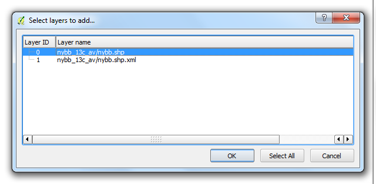
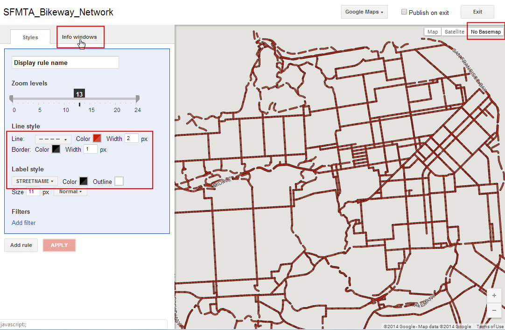
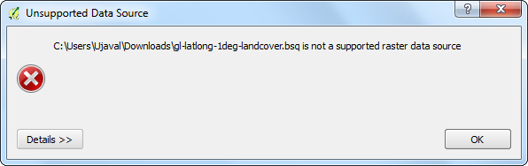

Analiza Celui Mai Apropiat Vecin
[ Download PDF A4 Letter ]
Aplicațiile GIS sunt foarte utile în analiza relației spațiale dintre entități. O astfel de analiză constă în identificarea entităților care sunt cele mai apropiate de o anumită caracteristică. QGIS are un instrument numit Distance Matrix care ne ajută în efectuarea acestei analize. În acest tutorial, vom folosi 2 seturi de date și vom afla care puncte dintr-un strat sunt mai aproape de punctele dintr-un al doilea strat.
Privire de ansamblu asupra activității
Cunoscând locațiile tuturor cutremurelor semnificative cunoscute, vom încerca să aflăm care este cel mai apropiat loc populat față de locul unde s-au produs cutremurele.
Alte competențe pe care le veți dobândi
Cum să efectuați unificarea tabelelor în QGIS. (Pentru instrucțiuni detaliate, parcurgeți Unificarea tabelelor.)
Folosirea Query Builder pentru a prezenta un subset de entități dintr-un strat.
Utilizarea plugin-ului MMQGIS pentru a crea linii radiale pentru a vizualiza cei mai apropiați vecini.
Procedura
Deschideți și navigați la fișierul anterior descărcat, signif.txt.

Deoarece acesta este un fișier delimitat de tab-uri, alegeți Tab ca File format. X field și Y field se vor auto-popula. Clic pe OK.
Note
Puteți vedea unele mesaje de eroare, pe măsură ce QGIS încearcă să importe fișierul. Acestea sunt erori valide, iar câteva rânduri din fișier nu vor fi importate. Puteți ignora erorile, în scopul acestui tutorial.

Deoarece setul datelor despre cutremur are coordonate de Latitudine/Longitudine, acesta va fi importat cu CRS-ul implicit EPSG:4326. Verificați, dacă este cazul, în colțul din dreapta-jos. Să deschidem, de asemenea, stratul Locurilor Populate. Mergeți la .

Navigați la fișierul descărcat, ne_10m_populated_places_simple.zip, apoi faceți clic pe Open.

Măriți și explorați ambele seturi de date. Fiecare punct purpuriu arată locația unui cutremur semnificativ, în timp ce fiecare punct albastru indică locația unei așezări populate. Avem nevoie de o modalitate de a afla cel mai apropiat punct din stratul de locuri populate, pentru fiecare locație din stratul cutremurelor.

Mergeți la .

În această fereastră, alegeți stratul cutremurelor, signif, ca strat de Intrare de tip punct, iar locurile populate ne_10m_populated_places_simple ca strat țintă. De asemenea, trebuie să selectați un câmp unic din fiecare strat, care stabilește modul în care vor fi afișate rezultatele. În această analiză, dorim să obținem doar 1 dintre cele mai apropiate puncte, așa că bifați Use only the nearest(k) target points, apoi introduceți 1. Denumiți fișierul de ieșire matrix.csv, și apăsați OK. O dată procesul încheiat, faceți clic pe Close.
Note
Un lucru util de reținut este faptul că se pot efectua analize chiar și cu 1 singur strat. Selectați același strat atât ca intrare cât și ca ieșire. Rezultatul va fi cel mai apropiat vecin din același strat în loc de a folosi un strat diferit, așa cum am procedat mai înainte.

O dată încheiată prelucrarea, faceți clic pe butonul Close din fereastra de dialog Distance Matrix. Puteți vedea fișierul matrix.csv în Notepad sau în oricare alt editor de text. QGIS poate importa fișiere CSV, de asemenea, așa că încărcați-l în QGIS și vizualizați-l acolo. Mergeți la .

Navigați la fișierul matrix.csv, nou creat. Deoarece acest fișier conține doar coloane de text, alegeți No geometry (attribute only table) pentru Geometry definition. Clic pe OK.

Veți vedea fișierul CSV, încărcat sub formă de tabel. Faceți clic dreapta pe stratul acestui tabel, apoi selectați Open Attribute Table.

Acum, veți putea vedea conținutul rezultatelor obținute. Câmpul InputID conține numele fișierului din stratul Earthquake. Câmpul TargetID conține numele entității, din stratul Populated Places, care a fost cea mai apropiată de locația cutremurului. Câmpul Distance reprezintă distanța dintre 2 puncte.
Note
Calculul distanței se va face cu ajutorul Sistemului de Coordonate de Referință al straturilor. Distanța va fi în grade zecimale, deoarece coordonatele stratului sursă sunt în grade. Dacă doriți distanța în metri, reproiectați straturile înainte de efectuarea calculului.

Aproape că am obținut rezultatele dorite. Pentru unii utilizatori, acest tabel va fi suficient. Totuși, am putea integra aceste rezultate în stratul Earthquake original, folosind Table Join. Faceți clic-dreapta pe stratul Earthquake, apoi selectați Properties.

Mergeți la fila Joins și faceți clic pe butonul +.

Vrem să unificăm datele rezultatelor analizelor noastre asupra acestui strat. Trebuie să selectăm un câmp din fiecare dintre straturile care au valori similare. Selectați matrix pentru Join layer și InputID pentru Join field. Câmpul țintă va fi I_D. Lăsați celelalte opțiuni la valorile implicite și faceți clic pe OK.
Uniunea va apărea în fila Joins. Clic pe OK.

Acum, deschideți tabela de atribute a stratului signif, făcând clic-dreapta și selectând Open Attribute Table.

Observați că, pentru fiecare entitate de tip cutremur, acum avem câte un atribut care reprezintă cel mai apropiat vecin (cea mai apropiată așezare populată), respectiv distanța până la cel mai apropiat vecin.

Vom explora acum o modalitate de a vizualiza aceste rezultate. Mai întâi, trebuie să facem îmbinarea tabelului permanentă, salvând-o într-un un nou strat. Faceți clic dreapta pe stratul signif și selectați Save As....

Faceți clic pe butonul Browse de lângă eticheta Save as și denumiți stratul de ieșire ca earthquake_with_places.shp. Asigurați-vă că ați bifat caseta Add saved file to map și faceți clic pe OK.

O dată ce noul strat este încărcat, puteți dezactiva vizibilitatea stratului signif. Deoarece setul nostru de date este destul de mare, puteți rula analiza de vizualizare asupra unui subset de date. QGIS are o caracteristică elegantă, unde se poate încărca un subset de entități dintr-un strat, fără a fi nevoie să-l exportați într-un nou strat. Faceți clic dreapta pe stratul earthquake_with_places și selectați Properties.

În fila General, derulați până la secțiunea Feature subset. Faceți clic pe Constructorul de Interogări.

Pentru acest tutorial, vom vizualiza cutremurele și cele mai apropiate locuri populate față de acestea, în cazul Mexicului. Introduceți următoarea expresie în fereastra de dialog Constructorul de Interogări.

Veți vedea că doar punctele care intră în cadrul Mexicului vor fi vizibile în canevas. Să facem același lucru pentru stratul locurilor populate. Faceți clic dreapta pe stratul ``ne_10m_populated_places_simple``și selectați Properties.

Deschideți fereastra de dialog Query Builder din fila General. Introduceți următoarea expresie.

Acum suntem gata de a crea vizualizarea noastră. Vom folosi un plugin numit MMQGIS. Găsiți și instalați plugin-ul. Parcurgeți Utilizarea Plugin-urilor pentru mai multe detalii cu privire la modul de lucru cu plugin-uri. O dată ce ați instalat plugin-ul, mergeți la .

Selectați ne_10m_populated_places_simple ca Hub Pointt Layer și name ca Hub ID Attribute. În mod similar, selectați earthquake_with_places ca Spoke Point LayeLayer și matrix_Tar ca Spoke Hub ID Attribute. Algoritmul liniilor radiale va trece prin fiecare dintre punctele cutremurelor și va crea o linie care le va uni cu locațiile populate care se potrivesc atributelor specificate. Faceți clic pe Browse și alegeți numele Output Shapefile pentru earthquake_hub_lines.shp. Faceți clic pe OK pentru a începe prelucrarea.

Procesarea poate dura câteva minute. Puteți vedea progresul în colțul din stânga-jos al ferestrei QGIS.

O dată încheiată prelucrarea, veți vedea stratul `` earthquake_hub_lines`` încărcat în QGIS. Puteți vedea că fiecare punct corespunzător unui cutremur, are acum o linie care îl conectează la cel mai apropiat loc populat.